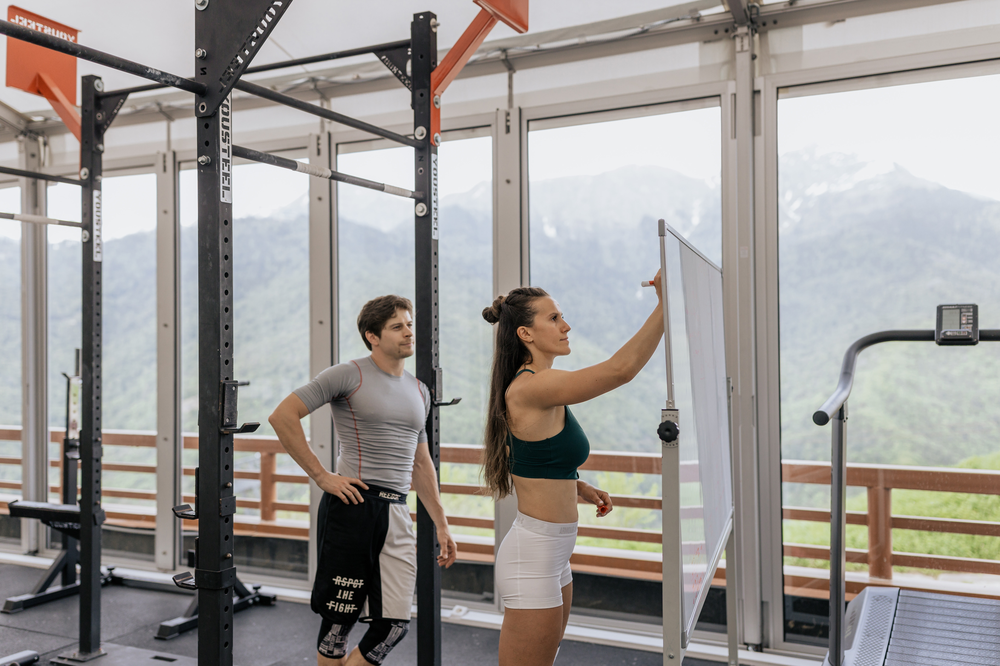

Fit Buddy nace en Costa Rica en tiempos de pandemia. En el 2020 nos dimos cuenta de la importancia de llevar una vida activa en comunidad. Todos hacíamos ejercicio desde nuestras casas pero pronto perdimos motivación, hasta que se nos ocurrió la idea de establecer una comunidad virtual de personas afines al fitnes y estilos de vida saludable y de esta forma motivarnos mutuamente.
Creemos en que la vida en comunidad es fundamental para llevar un proceso de manera saludable en el mundo del Fitness sea cual sea su objetivo
De esta manera, nos podemos ayudar, apoyar y guiar de manera desinteresada y mantenernos, coninuamente motivados
En mayo del 2020 un grupo de 4 amigos deciden realizar ejercicio por video llamadas debido al confinamiento
A los pocos meses, ese grupo de 4 personas se convirtió en un pequeño grupo de 20. Todos motivados a buscar acompañamiento a la hora de realizar actividad deportiva
Para finales del 2020 éramos una comunidad de 500 personas, buscando apoyo
Y para el 2021, decidimos crear nuestra propia plataforma, para seguir creciendo, buscando a todos esos interesados en el fitness ya no solo en Costa Rica, si no en múltiples países
Así es como nace Fit Buddy :)
Estamos enfocados en seguir creciendo como comunidad, apoyando a todo aquel que sienta estancado en su camino, sea cual sea la razón